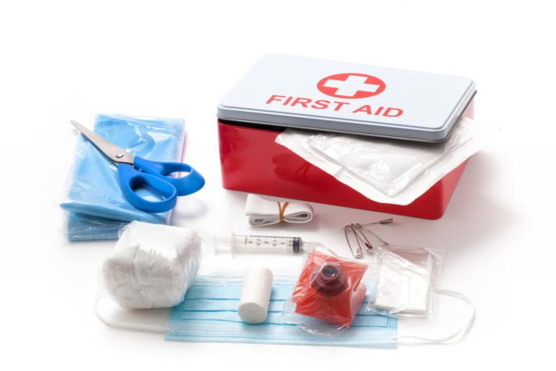

اهداف الاسعاف
:تتلخص الأهداف الأساسية للإسعاف الأولي بثلاثة نقاط هي
المحافظة على الحياة *
وقف حدوث الأذى أو الضرر، كإبعاد المريض عن مصدر الأذى *
أو مكان الحادث والضغط على الجروح لإيقاف النزف
تعزيز الشفاء من خلال توفير العلاج الأولي للإصابة *
كان للحروب والصراعات المسلحة الدور الأكبر في تطوير مفهوم الإسعاف الأولي )
(فقد دفعت الحرب الأهلية الأمريكية كلارا بارتون إلى تنظيم ما بات يعرف بالصليب الأحمر الأمريكي
الصفحة الرئيسية